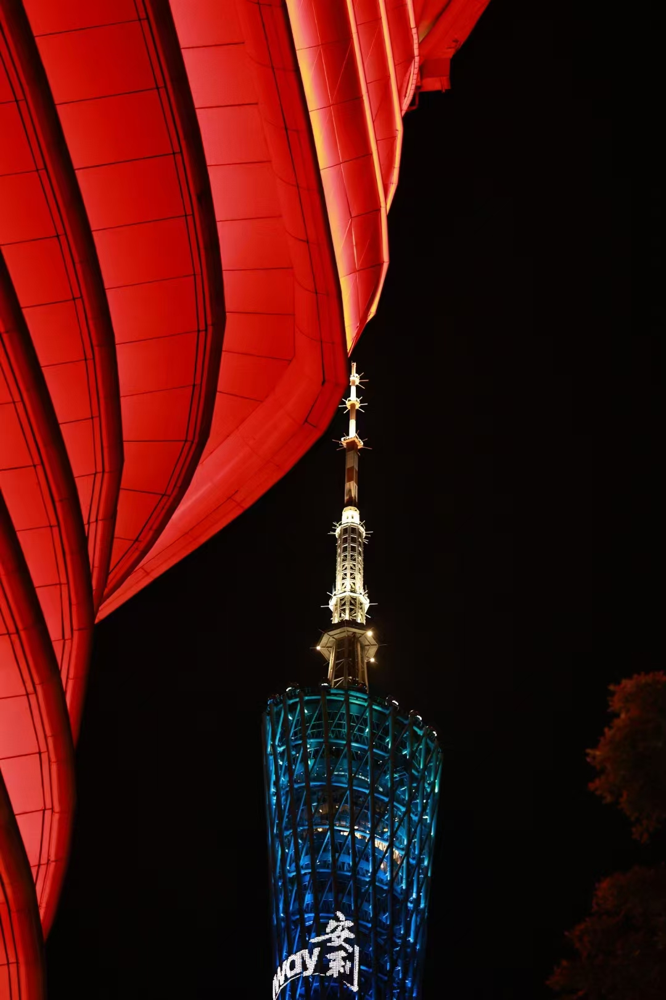
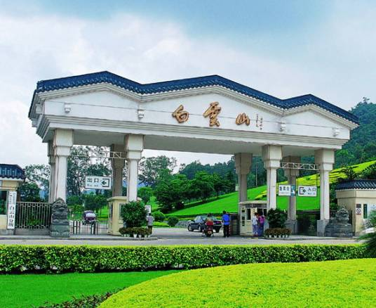
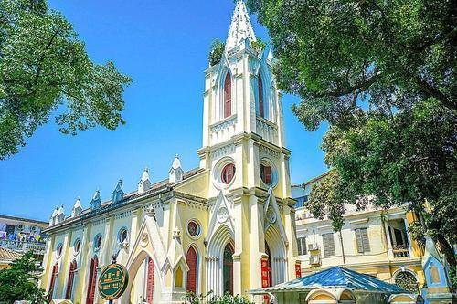

广州塔（英语：Canton Tower），又称广州新电视塔，昵称小蛮腰，位于中国广东省广州市海珠区（艺洲岛）赤岗塔附近，距离珠江南岸125米，与珠江新城、花城广场、海心沙岛隔江相望。广州塔塔身主体高454米，天线桅杆高146米，总高度600米 ，是中国第一高塔，国家AAAA级旅游景区。
广州市白云山景区，位于广东省广州市白云区广园中路801号，地处广州市东北部，总面积为21.8平方千米，属于城市山岳型森林生态风景区。
广州市沙面·西堤旅游区，位于广东省广州市市区西南部，沙面（英文名:Shameen），别名“拾翠洲”，南濒珠江白鹅潭，北隔沙基涌，东西长约862米，南北宽约287米，面积为0.3平方千米。沙面曾是广州的重要商埠，岛内设立过多个国家领事馆，是广州最具异国情调的欧洲建筑群，被称为“露天博物馆”.
